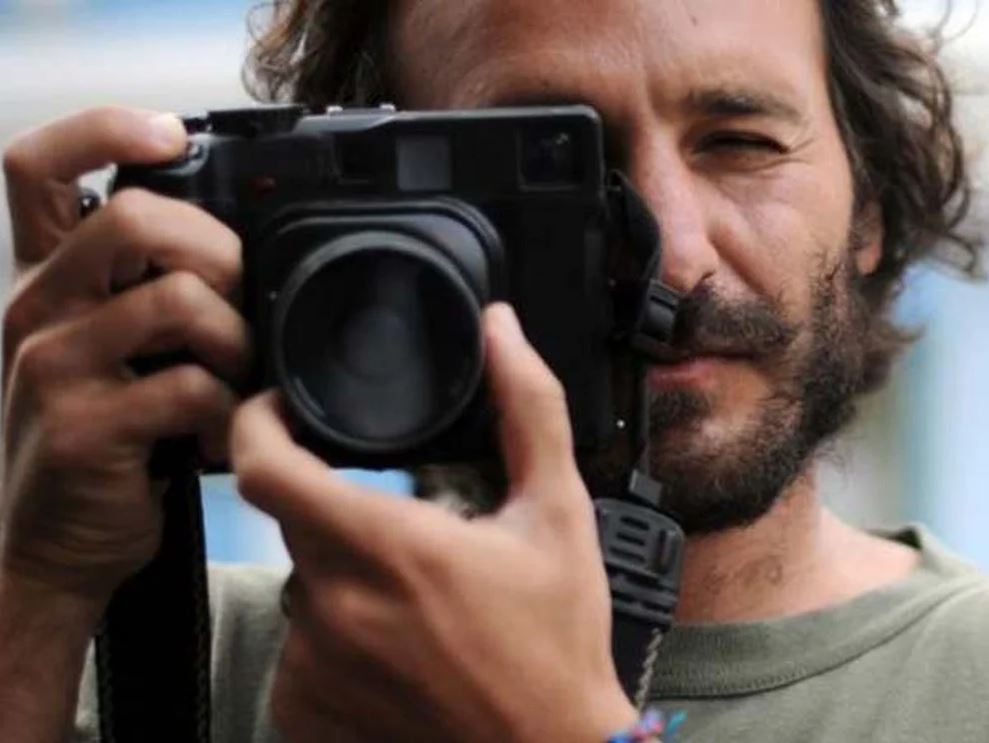

12 impactantes fotos de Rodrigo Abd, el argentino ganador del Pulitzer
Nació en Buenos Aires en 1976, es miembro del equipo fotográfico de Associated Press y cubrió diferentes conflictos en el mundo. Esta es su mirada
10 May, 2023
Rodrigo Abd acaba de ganar el Premio Pulitzer. El jurado destacó su cobertura de la guerra en Ucrania. La imagen premiada es la tiene como protagonista a Nadiya Trubchaninova, de 70 años, llorando arrodillada junto al ataúd que contiene el cuerpo de su hijo. Pero su trabajo no se reduce a un conflicto bélico en particular. Ha documento la violencia y las maras en Guatemala, el terremoto en Haití en 2010, la búsqueda de desaparecidos en Perú, las FARC en Colombia, el conflicto ecológico en la selva amazónica, los conflictos en Medio Oriente como el de Afganistán en 2010, la Primavera Árabe en Libia en 2011 y la guerra civil en Siria en 2012. Nació en Buenos Aires en 1976 y desde 2003 es miembro del equipo fotográfico de Associated Press. Antes, trabajó para los diarios argentinos La Razón y La Nación. El objetivo de sus fotos es “entender la guerra de una forma humana y no a través de números”. Esta es su mirada: